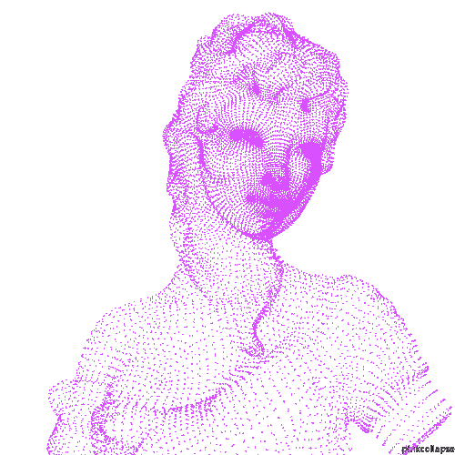

Loading...
BACK
Track Name
0:00
0:00
⏮
▶
⏭
//PROJECT OVERVIEW//
本作品以個人作品集網站為核心，結合視覺設計與前端開發，打造具有沉浸感的互動介面。
透過版面配置、動畫轉場與音樂播放器的整合，提升整體觀看體驗，使使用者在瀏覽過程中能直觀感受創作脈絡與風格呈現。
此實作不僅展現設計能力，也體現將概念轉化為數位互動作品的整合實力。
HOME
創作起點
互動頁面
作品展示
歷程記錄
未來展望

DESIGN × INTERACTION × PORTFOLIO ×
DESIGN × INTERACTION × PORTFOLIO ×
CREATIVE × VISUAL × EXPERIENCE ×
CREATIVE × VISUAL × EXPERIENCE ×
起點
這個作品的誕生，來自我對於設計與表達方式的思考。
動機
我不希望作品集只是靜態展示，而是能讓觀看者「體驗」我的創作。
轉化
因此我選擇結合前端與設計，將概念轉化為互動式網站。
互動頁面內容
作品展示內容
歷程記錄內容
未來展望內容